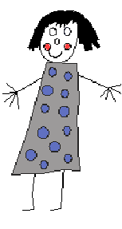

 Joana loves playing with odd numbers. In the other day, she started writing, in each line, an odd number of odd numbers. It looked as follows:
1 3 5 7 9 11 13 15 17 19 21 23 25 27 29 31 ...
On a certain line Joana wrote 55 odd numbers. Can you discover the
sum of the last three numbers written in that line? Can you do this
more generally for a given quantity of odd numbers?
Problem
Given the number N of odd numbers in
a certain line, your task is to determine the sum of the last
three numbers of that line.
Input
The input is a sequence of lines, one odd number
N (1<N<1000000000) per line
Output
For each input line write the sum of the last three odd numbers written by
Joana in that line with N numbers.
This sum is guaranteed to be less than 263.
Sample Input
3 5 7
15 45 87